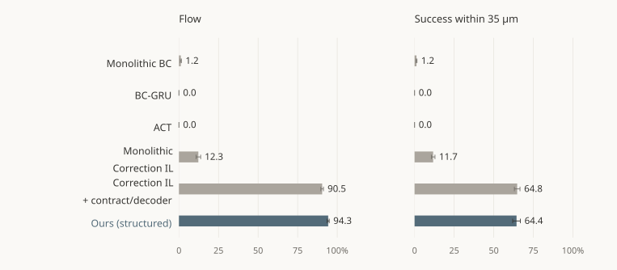
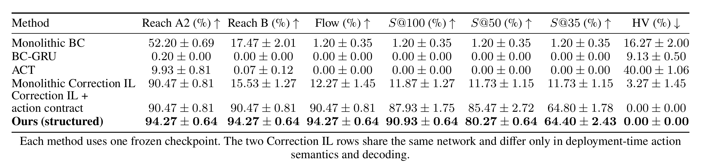
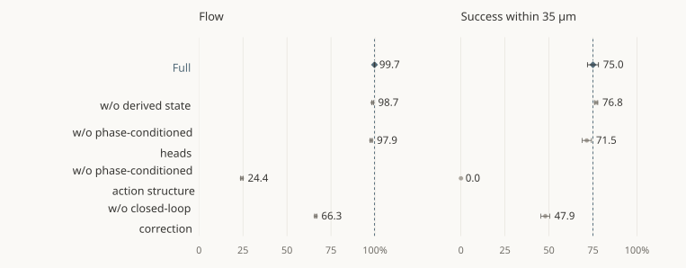
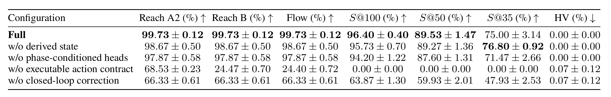
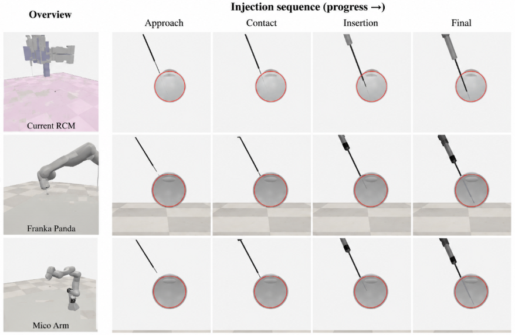
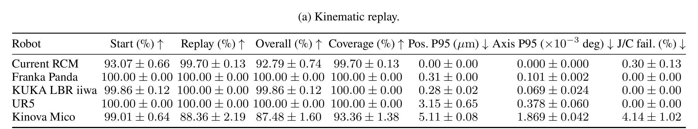

Robot learningAAAI · Passed Phase 1 Review
Learning Needle Control for Retinal Injection
Learning phase-aware needle control for retinal injection to meet micrometer-scale precision and safety requirements.
University of Bristol · Weiru Liu Research Group
Retinal injection in simulation
01 / The task
Robotic subretinal injection
We study a microsurgical task in which a robot first aligns a needle to the required approach angle, then inserts it beneath the retina to deliver treatments such as gene therapies.
Core challengesMicrometer-scale precision·Tissue safety
Align before entry. Lock the insertion axis. Stop within 35 μm of the target.
02 / The method
Learn the action. Make its execution explicit.
Watch how phase rules shape a proposal, then how the full policy learns and is refined.
Same frozen model · adding the contract & decoder
Align before entering.
Position + angle correction
Bounded position + angle correction
encoder
One policy. Only the current phase head supplies the action.
Before entry, position and orientation corrections are allowed within bounds.
Plays automatically · select a chapter or phase to jump ahead
b unchanged model proposalμ active channelsℓ, u action bounds
φ is the current phase. Masks and bounds also depend on the observation o.
z shared representationa admissible actions physical command
The regulator adjusts the proposal; the contract enforces the phase constraints.
ℒcorr expert correctionsℒret successful-state retention
λret ≥ 0 balances retention. All other learned modules stay frozen.
03 / The evidence
Completion and precision, measured separately.
Completing the procedure and reaching a precise endpoint answer different questions. Both are shown here.
Full-task comparison
E1–E3 · 500 tasks per block · one frozen checkpoint per method
The structured policy reaches 94.27% procedural completion. At the 35 μm endpoint threshold, its 64.40% success rate is close to the contract/decoder baseline’s 64.80%.


Full comparison table & metric definitions
- Flow
- Procedural completion, reported separately from endpoint precision.
- S@35 / S@50 / S@100
- Success evaluated at 35, 50 and 100 μm endpoint thresholds.
- Hard violations
- Observed task-constraint violations in simulation.


All values are percentages: mean ± sample SD across three held-out geometry blocks, rather than across independent training seeds. Select the table to enlarge.
What does the structure contribute?
T3E1–T3E3 · separate matched blocks · 500 tasks per block
Removing the combined phase-conditioned action structure reduces Flow from 99.73% to 24.40% and S@35 from 75.00% to 0% in the matched ablation study.


Full ablation table & evaluation setup


These configurations use a separate matched evaluation family with one pre-specified training seed. The full model’s 99.73% Flow here is distinct from the primary comparison’s 94.27%.
The action-structure ablation removes the combined phase-conditioned action structure. It is not an isolated test of a single clipping rule.
Inspect the action-trace checks
- 96,350
- Policy steps reconstructed with zero action error; no illegal phase transitions.
- 1,996
- Paired rule-intervention checks passed.
- 3,139
- Null-control checks passed.
Trace checks cover 500 simulated episodes. These counts refer to different units and are reported separately.
04 / Across robots
Shared task-space motion. Different robot models.
Keep the policy and task-space commands shared; use each robot’s coordinate frames, kinematics and joint limits to realise the motion.


Five kinematic models
- Current RCM
- Franka Panda
- KUKA LBR iiwa
- UR5
- Kinova Mico
The evaluation identifies limits in start reachability, joint ranges and solver continuity.
Kinematic replay of fixed, Flow-qualified trajectories. Closed-loop execution on physical robots remains to be validated.
Cross-robot compatibility results


Reported rates describe kinematic compatibility of the replayed trajectories, rather than closed-loop task success on physical robots.